Os eczemas são reações inflamatórias da pele caracterizadas clinicamente por prurido, eritema, vesiculação, exsudação, formação de crostas, descamação e liquenificação que acontecem de forma sucessiva ou agrupada e, histologicamente, por espongiose e diferentes graus de acantose.
Dermatite e eczema são dois termos que podem ser considerados sinônimos. Todos os eczemas podem evoluir em 3 fases, relacionadas ao processo inflamatório: aguda ou exsudativa onde predomina eritema e vesícula; subaguda com prevalência de crostas e crônica ou seca, com predomínio das escamas e liquenificação.
As principais forma de eczema são: eczema de contato, dermatite atópica e eczema seborreico. Menos freqüentemente são vistos: eczema numular, disidrose, eczema de estase e dermatite infectiva.
A dermatite infecciosa ou infectiva associada ao vírus linfotrópico de células T humanas tipo 1 (HTLV-1) é uma forma grave de eczema cronicamente infectado que ocorre na primeira infância, embora muito raramente tenham sido relatados casos em adultos. A maioria dos casos vem da Jamaica e do Brasil e ocorre em indivíduos de baixo nível socioeconômico. A dermatite infectiva está sempre associada a infecção refratária por Staphylococcus aureus ou Streptococcus beta-hemolítico da pele e vestíbulos nasais.
Os eczemas são caracterizados por três principais características morfológicas: condição de múltiplos pontos, polimorfismo e coceira. Para descrever o polimorfismo, o "triângulo do eczema" tem sido usado na dermatologia alemã/japonesa. Os múltiplos pontos correspondem a numerosos focos minúsculos dos quais surgem pápulas/vesículas individuais. O polimorfismo revela a composição de eritema, pápula, seropápula, vesícula, pústula, escama e crosta, que são observadas no eczema agudo. Enquanto isso, o eczema crônico é representado por liquenificação e hiperpigmentação, e possivelmente por hipopigmentação.
No eczema agudo, a espongiose está associada à superprodução de ácido hialurônico, à secreção de galectina-7 autoprotetora e à diminuição da expressão de E-caderina. Na derme superior, infiltrado Th1/Tc1 ou Th2/Tc2 e adicional Th17, Th22 e/ou Tc22, dependendo de cada doença eczematosa. As células linfoides inatas também estão envolvidas na formação do eczema.
No eczema crônico, a periostina contribui para o remodelamento da pele inflamatória com fibrose dérmica, e a melanogênese epidérmica e a deposição de pigmento dérmico resultam em hiperpigmentação. Finalmente, as doenças eczematosas estão potencialmente associadas ao aumento do risco de comorbilidades, incluindo não só outras doenças alérgicas, mas também doenças coronárias e problemas mentais como a depressão. Embora a palavra original para eczema seja derivada do grego antigo “ekzein”, o eczema continua sendo um alvo importante da ciência moderna e de novas terapias.
REFERÊNCIAS BIBLIOGRÁFICAS
1. Tips and Tricks for Controlling Eczema. Raveendran R.Immunol Allergy Clin North Am. 2019 Nov;39(4):521-533.
2. What is "eczema"? Tokura Y, Yunoki M, Kondo S, Otsuka M.J Dermatol. 2025 Feb;52(2):192-203.
3. Eczema. Nemeth V, Syed HA, Evans J.2024 Mar 1. In: StatPearls [Internet]. Treasure Island (FL): StatPearls Publishing; 2025 Jan–.PMID: 30855797
4. Efficacy and safety of delgocitinib cream in adults with moderate to severe chronic hand eczema (DELTA 1 and DELTA 2): results from multicentre, randomised, controlled, double-blind, phase 3 trials. Bissonnette R, Warren RB, Pinter A, Agner T, Gooderham M, Schuttelaar MLA, Crépy MN, Stingeni L, Serra-Baldrich E, Baranowski K, Korn S, Kurvits M, Plohberger U, Strange Vest N, Schliemann S; trial investigators.Lancet. 2024 Aug 3;404(10451):461-473.
5. The management of severe eczema in pregnancy. Keeling E, Smith CH, Woolf RT.Clin Med (Lond). 2025 Jan;25(1):100282.
Atlas de imagens 67


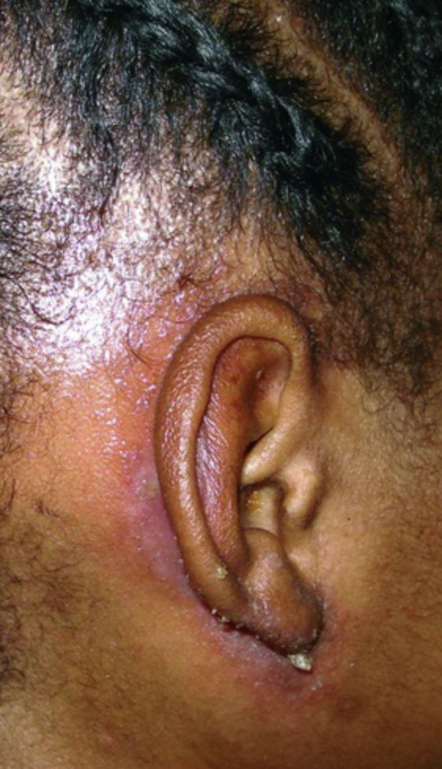

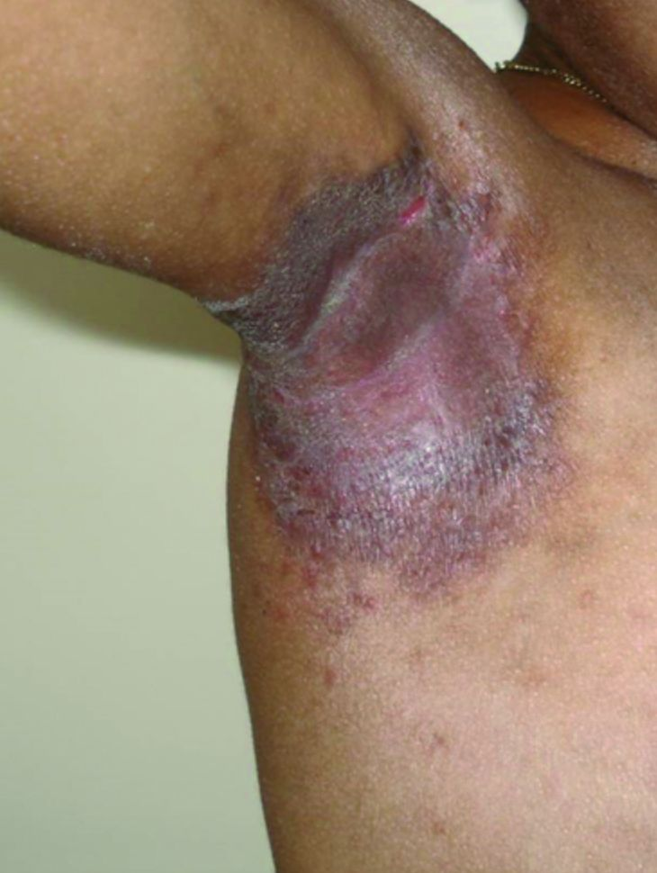

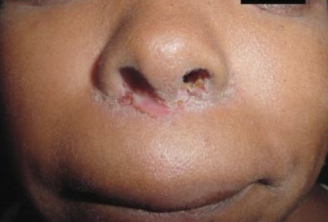

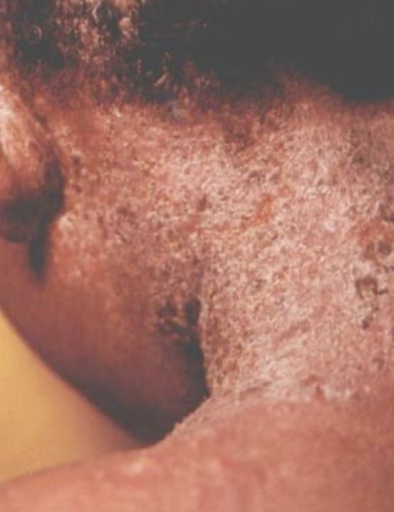


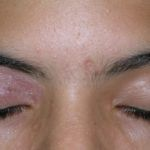

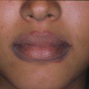

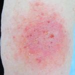


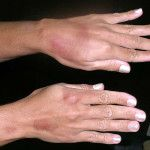


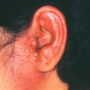


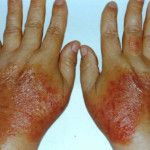


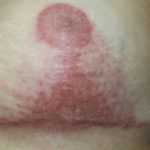

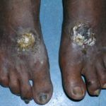

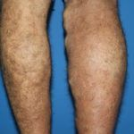


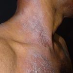


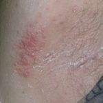

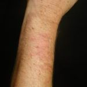

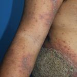

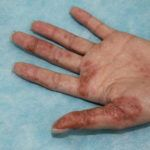

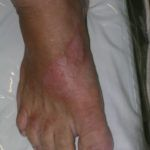


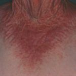

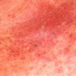


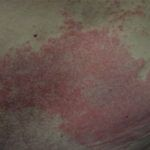


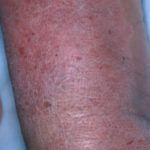


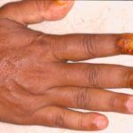


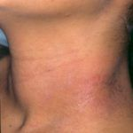

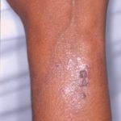


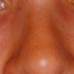


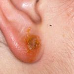

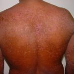

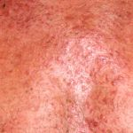


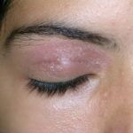


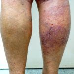
Na Skin Prime
Como podemos ajudar
O texto sobre Eczemas não cita procedimentos específicos entre os oferecidos pela clínica. A conduta é definida em consulta: nossa equipe avalia as manifestações na pele e orienta o tratamento ou o encaminhamento adequado.